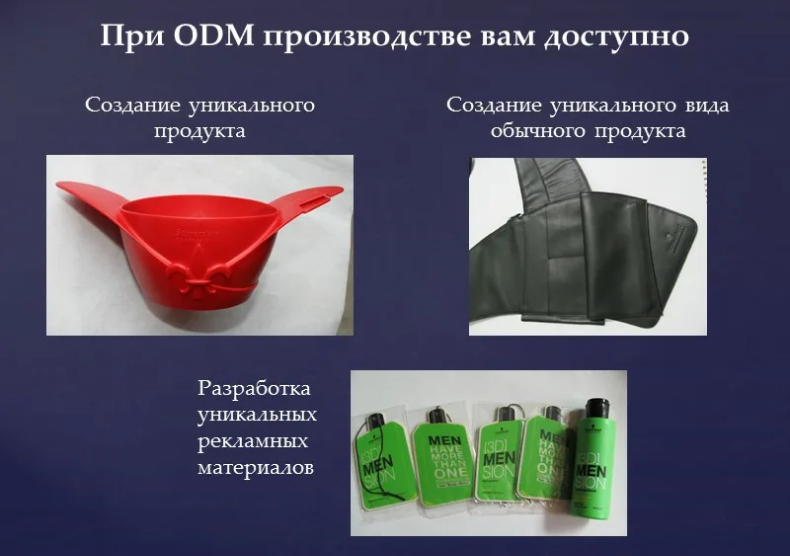

ODM производство позволяет создавать уникальные продукты, которые не представлены на маркетплейсах и в магазинах. Это дает возможность получить конкурентные преимущества и завоевать свою долю на рынке. Рассказываем подробнее по такое производство и как заказать уникальные товары в Китае.
Что такое ODM производство
ODM производство (англ. Original Design Manufacturer) — это процесс разработки и производства продукта по индивидуальному заказу клиента. По заказу клиента компания-производитель разрабатывает и изготавливает продукт в соответствии с требованиями и спецификациями, а не продает готовые изделия.
ODM производство обычно заказывает компания, желающая получить уникальный товар, которого нет на рынке.
